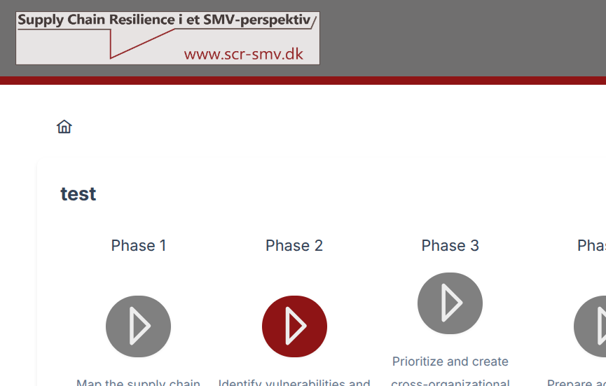
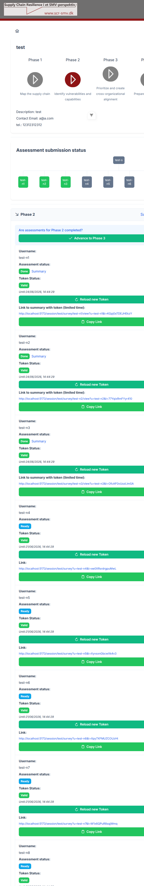
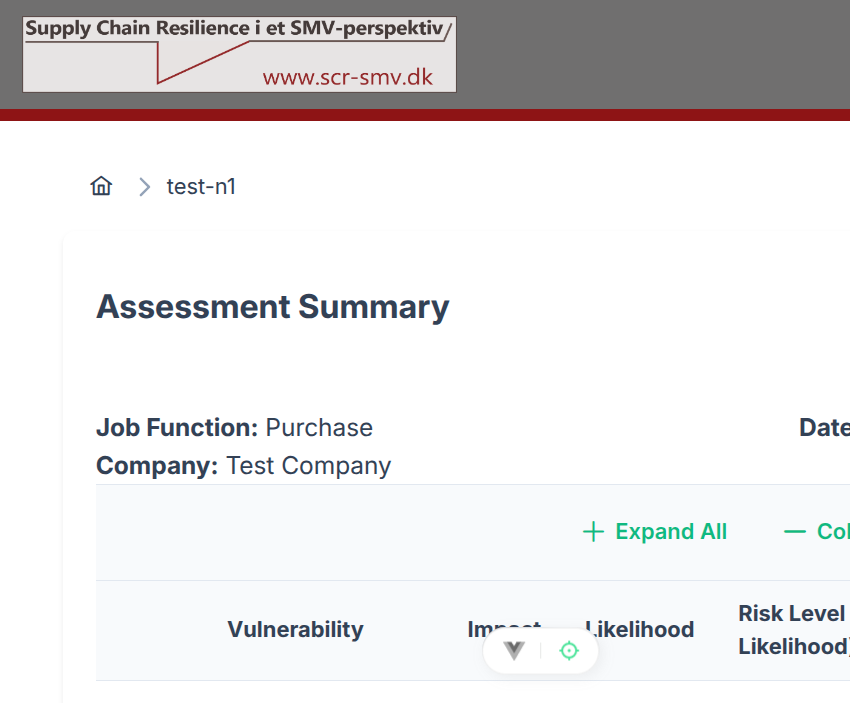
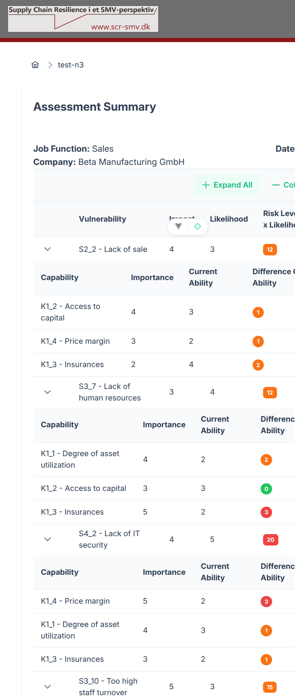
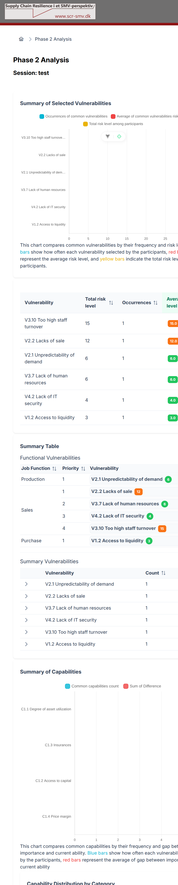
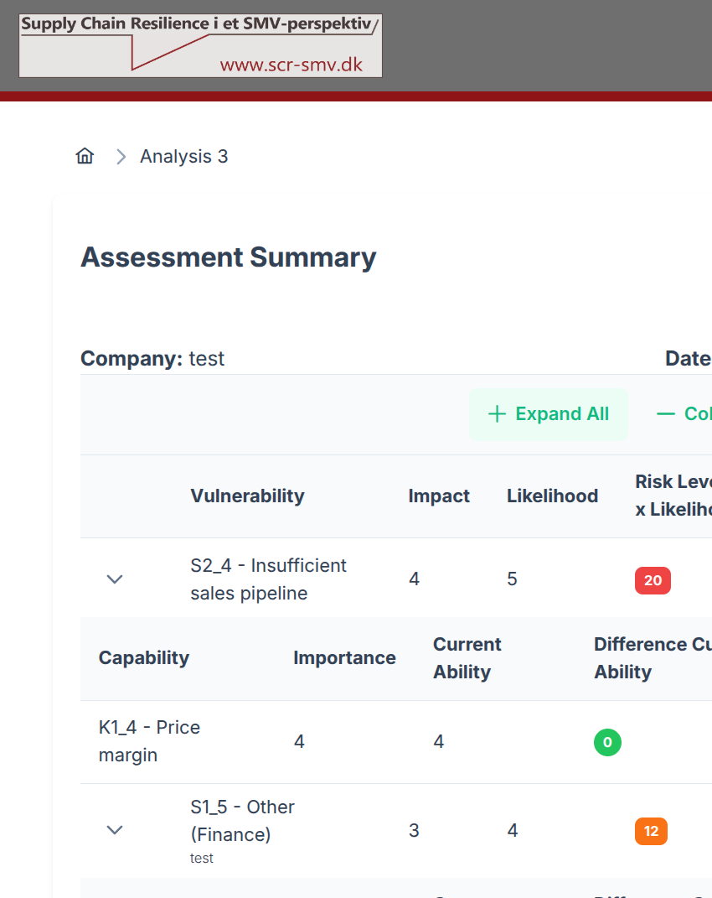

👔 Session Manager Guide
Comprehensive guide for session managers on creating sessions, managing users, and analyzing survey results.
📋 Table of Contents
🎯 Overview
What is this tool?
The Supply Chain Resilience Assessment Tool helps organizations identify vulnerabilities and assess capabilities across their supply chain. It works in four phases:
| Phase | Name | Description |
|---|---|---|
| 1 | Map the supply chain | Understand your supply chain structure |
| 2 | Identify vulnerabilities and capabilities | 7-step survey for participants |
| 3 | Prioritize and align | Cross-organizational analysis & charts |
| 4 | Prepare action plans | Use the data to create concrete plans |
About the project
Project Details
This tool is developed as part of the Cybersikkerhed og Forretningskontinuitet (Cybersecurity and Business Continuity) project, funded by the Danish Industry Foundation (Industriens Fond) and carried out by researchers from the University of Southern Denmark (SDU) in partnership with the Royal Danish Military Academy (Forsvarsakademiet).
The project integrates cybersecurity into supply chain resilience work for Danish SMEs. It builds directly on the earlier Supply Chain Resilience project (2021-2023).
👥 User Roles
The system has three main user roles with different capabilities:
| Role | Capabilities |
|---|---|
| Administrator | Creates sessions, views all data (PocketBase admin) |
| Session Manager | Views session overview, analysis dashboards, manages users |
| Participant | Takes the survey (one per session) |
🚀 Getting Started - Administrator
Login
- Open the application in your browser
- Navigate to the admin panel - add
/adminto the URL (e.g.http://localhost:5173/admin) - Enter the admin credentials you created during the first-time setup wizard.
ℹ️ No default credentials
There are no pre-set admin credentials. The admin account is created by you during
the PocketBase setup wizard on first startup (/_/). Use whatever email
and password you chose at that time.
🆕 Creating a Session
A session represents one assessment round for a specific organization or team.
Step-by-step
- After logging in as admin, you'll see the Create Session form
- Fill in the fields:
| Field | Required | Description |
|---|---|---|
| Session Name | ✅ | A unique name for this assessment round. Click Validate to check availability |
| Session Description | ✅ | Brief description (e.g. "Q2 Supply Chain Review") |
| Question Set | ✅ | Currently only supply_chain available |
| Contact Email | ✅ | Email for session-related communications |
| Contact Tel | No | Optional phone number |
| Start Date | No | Session start (defaults to today) |
| End Date | No | Session end (defaults to 30 days from now) |
- Click Create
What happens next?
The system automatically:
- Creates 10 participant accounts (named
[session]-n1through[session]-n10) - Creates 1 session manager account (named
[session]-s) - Generates a unique login token for each user (valid for 1 month)
- Shows the session manager credentials on screen
📋 Important
Copy the session manager credentials immediately! The password is only shown once.
👥 Managing Users
Viewing the user list
After creating a session, navigate to the session overview:
/session/[session-name]The page shows:
- Session details (description, contact info, dates)
- Phase progress tracker
- Assessment submission status - a table with all 11 users
- For each user: username, status, and a Copy Link button
User statuses
| Status | Meaning |
|---|---|
| Ready | User has been created but hasn't started |
| Unfinished | User has started the survey but hasn't submitted |
| Done | User has completed and submitted the survey |
Distributing access links
- Click Copy Link next to a user to copy their unique survey link
- Send this link to the participant (via email, chat, etc.)
- The link contains a built-in token - the participant does NOT need a password
📊 Viewing Results - Session Manager
Session Overview Dashboard
As a session manager (username ending in -s):
- Log in with your session manager credentials on the home page
- You'll be redirected to the session overview
- The overview shows completion status for each participant
Analysis Dashboards
Access the analysis views from the session overview:
- Analysis 2 - Vulnerability assessment results with charts
- Analysis 3 - Capability prioritization visualization
These views aggregate all participants' responses and show:
- Which vulnerabilities were ranked highest across the organization
- Capability levels across different areas
- Comparison charts for cross-organizational alignment
📊 Tip
The analysis becomes more meaningful as more participants submit their surveys.
Setting your password
As a session manager, you'll be prompted to set a password on first login:
- Enter a secure password
- Confirm the password
- Click Save
This password replaces the auto-generated token for future logins.
🌐 Language Switching
The interface supports English and Danish (Dansk).
To switch:
- Click the 🌐 (globe) icon in the top-right corner
- Select your preferred language from the dropdown
- The entire interface switches immediately
🇩🇰 Danish Support
Danish translations cover the survey form, analysis views, and admin interface.
❓ Troubleshooting
"Session name is not available"
The session name must be unique. Try a different name or check if a session with that name already exists.
"Access restrict, user do not have privilege"
You're trying to access a page your account doesn't have permission for. Common causes:
- A participant trying to access the admin panel
- A PocketBase admin trying to access analysis views (use a session manager account instead)
"Failed to authenticate"
Check that your username and password/token are correct. For participants, make sure you're using the link provided by your session manager.
Survey answers not saving
Ensure JavaScript is enabled in your browser. The survey auto-saves to local storage as you progress through the form.
Token expired
Session user tokens are valid for 1 month. If a token expires:
- Go to the session overview page (
/session/[session-name]) - Find the user in the Assessment submission status table
- Click Reload New Token for that user
- Click Copy Link and share the updated link with the participant
📚 Glossary
| Term | Definition |
|---|---|
| Session | One assessment round - contains 10 participants + 1 manager |
| Token | A unique login key for participants (no password needed) |
| Vulnerability | A weakness in the supply chain that could cause disruption |
| Capability | An organizational strength that helps manage supply chain risk |
| Session Manager | The super user of a session - can view all results |
| PocketBase | The backend framework (database + API + admin UI) |
| FormKit | The library used to build and render the survey forms |
📖 Related Documentation
👔 Session Manager
You are currently reading the Session Manager guide.
🖥️ UI Walkthrough (with Screenshots)
The following screenshots show the actual session manager interface running
against a live session named "test" with participants
test-n1 through test-n8.
Session Overview (/session/:sessionName)
After login you land on the session overview. The top of the page shows:
- The session name and a horizontal phase indicator (the active phase is highlighted in dark red).
- Session metadata: description, contact email and phone number.
- A small organisation chart thumbnailing all participant icons.

Scrolling down reveals the Assessment Submission Status section:
- Users who have submitted show a green Done badge and a Summary link.
- Users who have not yet submitted show a blue Ready badge.
- Each user entry shows Token Status, expiry time, a Reload new Token button, and a Copy Link button.

Individual Assessment Summary (/session/:sessionName/survey/:username/view)
Click the Summary link next to any Done user. The breadcrumb shows 🏠 > username.
The card contains:
- Job Function and Company of the participant, plus submission date.
- A sortable vulnerability table with columns: Vulnerability · Impact · Likelihood · Risk Level (Impact × Likelihood).
- A ▶ expander per row; clicking it reveals the capabilities selected for that vulnerability (Capability · Importance · Current Ability · Difference).
- + Expand All / — Collapse All buttons for the whole table.

Example with all rows expanded (test-n3 – 4 vulnerabilities × 3 capabilities each):

Risk Level colour coding
| Score (Impact × Likelihood) | Level | Badge colour |
|---|---|---|
| 1 – 8 | Low | Low (green) |
| 9 – 16 | Medium | Medium (orange) |
| 17 – 25 | High | High (red) |
Phase 2 Analysis (/session/:sessionName/analysis2)
Click Summary in the Phase 2 panel header on the session overview. This page aggregates all submitted assessments.

Key sections on this page:
| Section | What it shows |
|---|---|
| Summary of Selected Vulnerabilities (bar chart) | Blue = occurrence count; Red = average risk level; Yellow = total risk among all participants who selected it. |
| Vulnerability table | Sortable: Vulnerability · Total Risk Level · Occurrences · Average Level. |
| Functional Vulnerabilities table | Grouped by Job Function with priority rank per vulnerability. |
| Summary Vulnerabilities | Expandable rows showing each vulnerability's occurrence count and per-participant breakdown. |
| Summary of Capabilities (bar chart) | Blue = how often each capability was selected; Red = sum of capability gaps. |
| Capability Distribution by Category | Groups capabilities by category, showing frequency and gap. |
Phase 3 Analysis (/session/:sessionName/analysis3)
Available after advancing to Phase 3. This page shows the session manager's own assessment — the vulnerabilities and capabilities they entered via their survey form. It requires the session manager to have submitted their own form first; if not, the page shows: "Assessment data is missing, make sure you have submitted the form."
The page displays:
- Company name and Date of submission.
- A sortable vulnerability table (same layout as the individual summary view): Vulnerability · Impact · Likelihood · Risk Level badge.
- + Expand All / — Collapse All buttons to reveal the capabilities for each vulnerability (Capability · Importance · Current Ability · Difference).
- A Print button to produce a print-friendly layout.

Advancing the Phase
When at least one participant has status Done in Phase 2, an
info banner appears inside the Phase 2 panel with an
Advance to Phase 3 button.
Clicking it updates current_step to 3 and reloads the page.
To roll back from Phase 3 to Phase 2, a Back to Phase 2 button appears in the Phase 3 panel header.